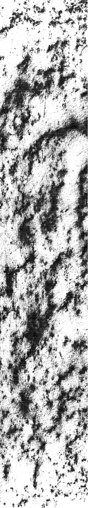

La erosión hídrica y sus
efectos en la vía pública

Carta hidrográfica Valle de México 1862

Abstract
Este trabajo analiza cómo la erosión hídrica destruye las calles de Santa Martha Acatitla, Iztapalapa. El suelo de la zona es lacustre: arcillas blandas, fáciles de comprimir, que no fueron hechas para soportar el peso de la ciudad. Cuando llueve, el agua no tiene a dónde ir. Se acumula, se estanca, y se mueve por el suelo tratando de salir. Se filtra a través de las grietas arrastravndo y debilitando el suelo debajo del pavimento. Las calles se rompen. Se reparan. Se vuelven a romper. Este ciclo se seguirá replicando hasta no comprender el origen del problema: el agua.